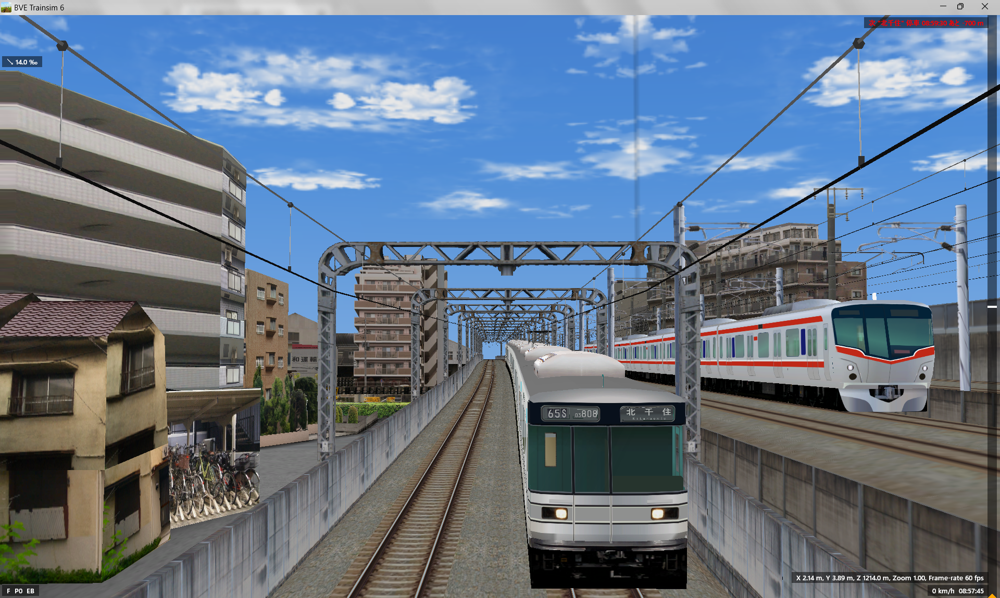
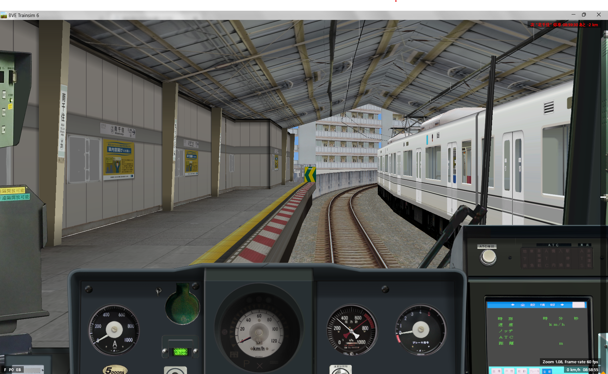
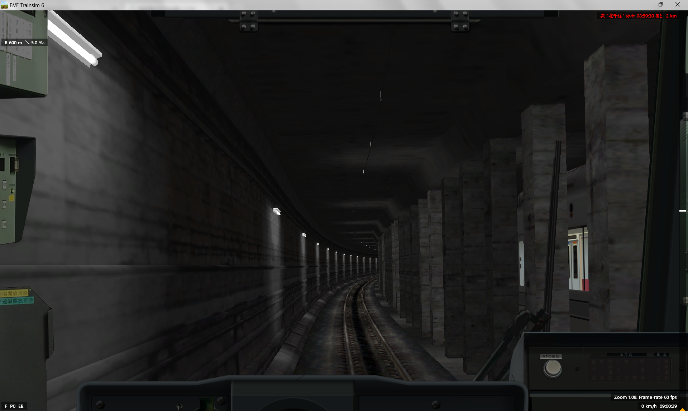
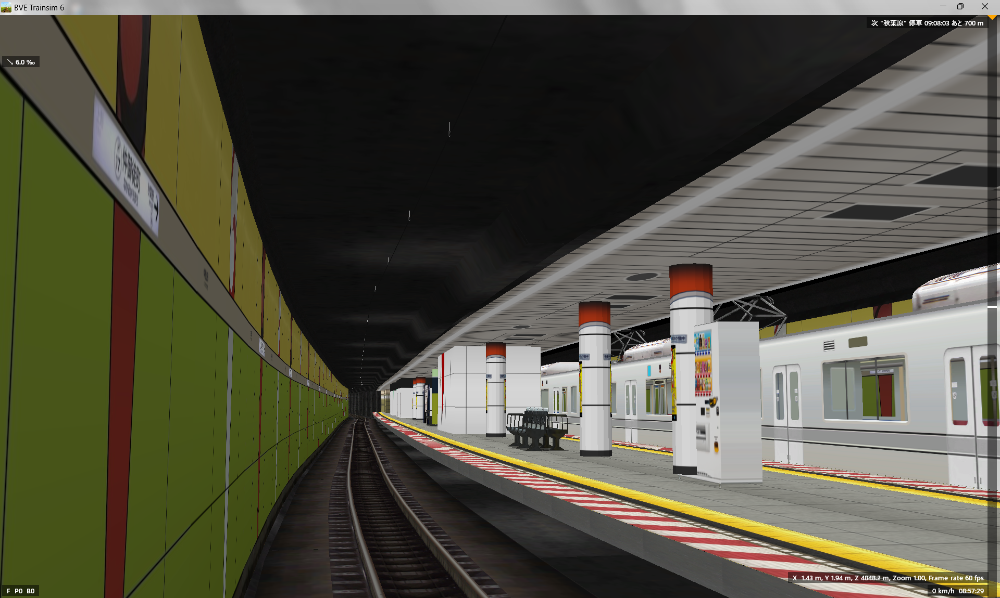

日比谷線 ver0.2-2026年4月7日公開
スクリーンショット




運転台はvertah様の03系(過去のエイプリルフールデータ、現在未公開)を使用しております。
ダウンロードする前に
本来なら完成させてから出したかったのですが、今後一年ほど一切活動ができない為、ここまでで公開させていただきます。
未完成な点は
・北千住駅と引込線部分
・南千住2丁目・5丁目エリア
・音声全般
・対向車の調整
・各駅の表示類
です。ここに関しては活動休止開けに更新致します。
→諸般の事情により、バグや不具合を除く本編の更新は今後しない方針になりました。
一部ストラクチャはフリー素材として公開予定です。
その他やりたいこと(やるとは言ってない)
・03系・20000系列・13000系・70000系列の車両データ
・BveEXによる機能拡張版ゲーム風シナリオ「MetroDriver」(詳しくは後述)
・より電車でG◯ぽくするためのUnityを使用したBVEのシナリオランチャー(これも後述)
尚、いずれも最低限形になってはいまが、これらは細かなバグや音素材の不足などが顕著という状況です。
ダウンロードの前に
本データは未完成です。youtube等動画サイトでの運転動画の公開は認めません。改造パッチについてはご自由にどうぞ。
動作にはBveEXの導入が必要です。ご了承ください。
ご意見・バグ報告はこちら
仮公開データのため、エラーなどを一切解消しておりませんが、気にせず続行してください。
4thi5、メモリ4gb、ストレージ128gb、GPU内蔵のPCにて動作のテストをしております。
お待たせしました。以下のリンクからダウンロードしてください。
初回ダウンロードの方はこちら
既に導入済みの方はダウンロード
※既に導入済みの方は、フォルダ構成やファイル内容が大きく変更となっておりますので、以上のリンクのアプリより更新をお願い致します。(上書きでは満足に動作しません)
このデータ内のファイルのうち、頂き物のファイル(wattzmaro\MDHibiya\structures\collaboratorと他のディレクトリにある何枚かの画像)以外は転載していただいて構いません。
制作にあたり、以下の皆様にご協力いただきました。ありがとうございます。
おーとま様 ... BVE拡張MOD「BxeEX」を開発していただきました。また、プラグイン開発に多大な援助をしていただきました。
高橋うさお様 ... 車両プラグイン「メトロ総合プラグイン」を開発してくださいました。
shino様 ...657系/531系の車両ストラクチャを頂きました。
サハ209様 ... 231系の車両ストラクチャをフリー素材として公開してくださいました。また、「サハ209式地下駅」はシナリオ制作/03系ストラクチャの参考にさせていただきました。
くーせみ様・BVE_i_様 ... 沿線ストラクチャのモデリングを支援してくださいました。また、トンネル部分のストラクチャや駅など一部ストラクチャを頂きました。
Bve trainsim Kintetsu Nara/Osaka Line 様...一部ストラクチャを「なるべく座標を打たずに線路を引く」にてフリー素材として公開してくださいました。
いぬろこさん様(現実逃避組) ... 制作支援ソフト「Prepare」を開発し、10030系のテクスチャを提供していただきました。
また、Bve本体を開発して頂きましたmackoy様・Rock_On様にもこの場を借りて感謝いたします。
また、本シナリオでは一部のテクスチャの作成/加工にgoogleのgeminiを使用しております。ご了承ください。